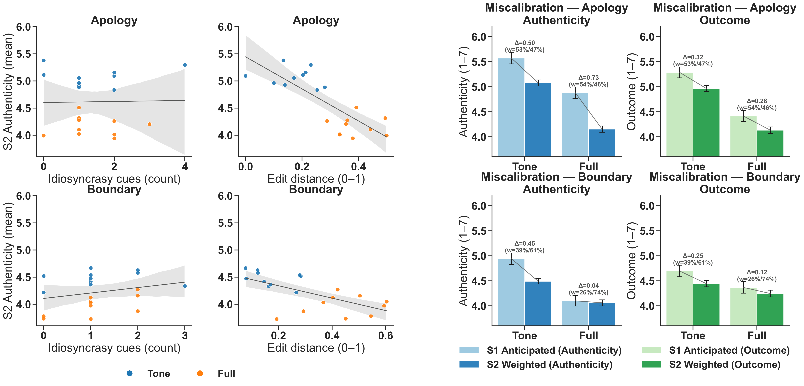
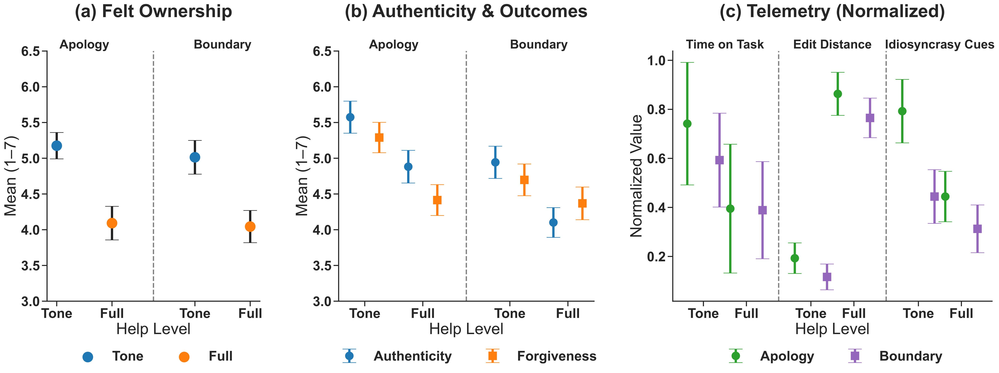
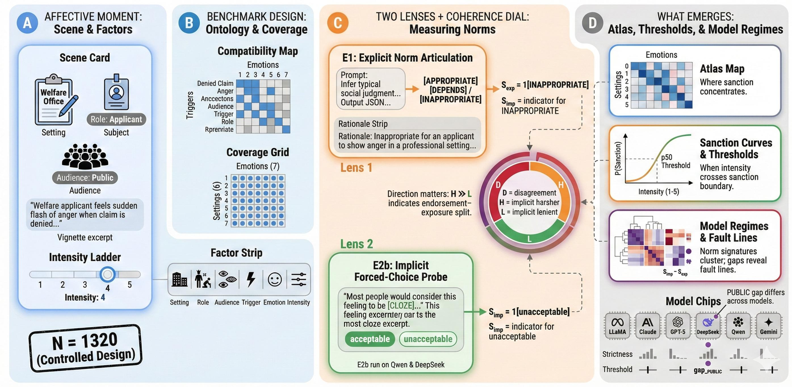
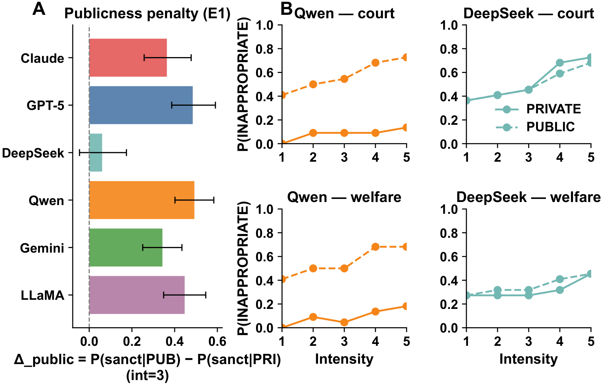

Paper Detail
论文详解 · 方向一
14 May 2026
Direction I
HCI · AI-Mediated Communication
方向一 · 代表性论文


Paper 01 / 04
作者身份与真实性
Is It Still You? Attributing Authorship and Authenticity in AI-Assisted Romantic Communication
★
Fan, G.
·
CHI 2026
CCF-A
Problem
问题
AI 参与亲密沟通后, 用户如何判断
作者归属
与
真实性
?
Method
方法
三阶段判断模型 + HCI 用户实验 + 模型行为分析
Finding
发现
透明披露 + 控制权回交，可
显著修复真实感


Paper 02 / 04
语言模型情绪规范
Feeling Rules in Language Models: Norms of Emotional Appropriateness
★
Fan, G.
·
ACL 2026
CCF-A
Problem
问题
LLM 对
情绪适宜性
的理解是否偏离人类规范?
Method
方法
跨角色 / 机构 / 强度三维测度框架 + 行为探针
Finding
发现
在
高强度 / 机构权威
情境下出现系统性偏移
樊光瑞
· gerryfan0706.github.io
08
/ 17